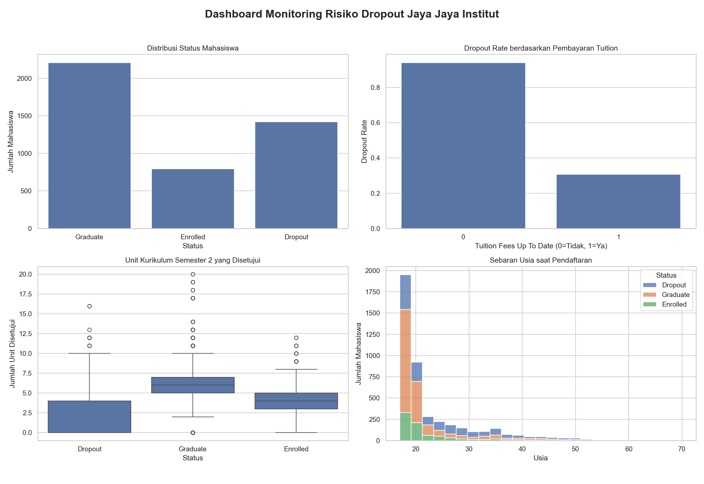

Dashboard ini memakai seluruh data untuk monitoring status mahasiswa. Model machine learning dilatih hanya dengan status Dropout dan Graduate; status Enrolled dipakai sebagai data inferensi risiko.

| Status | size |
|---|---|
| Dropout | 1421 |
| Enrolled | 794 |
| Graduate | 2209 |
| feature | dropout_mean | graduate_mean |
|---|---|---|
| Tuition_fees_up_to_date | 0.678395 | 0.986872 |
| Debtor | 0.219564 | 0.045722 |
| Scholarship_holder | 0.094300 | 0.377999 |
| Curricular_units_1st_sem_approved | 2.551724 | 6.232232 |
| Curricular_units_2nd_sem_approved | 1.940183 | 6.177003 |
| Curricular_units_1st_sem_grade | 7.256656 | 12.643655 |
| Curricular_units_2nd_sem_grade | 5.899339 | 12.697276 |
| Age_at_enrollment | 26.068966 | 21.783612 |